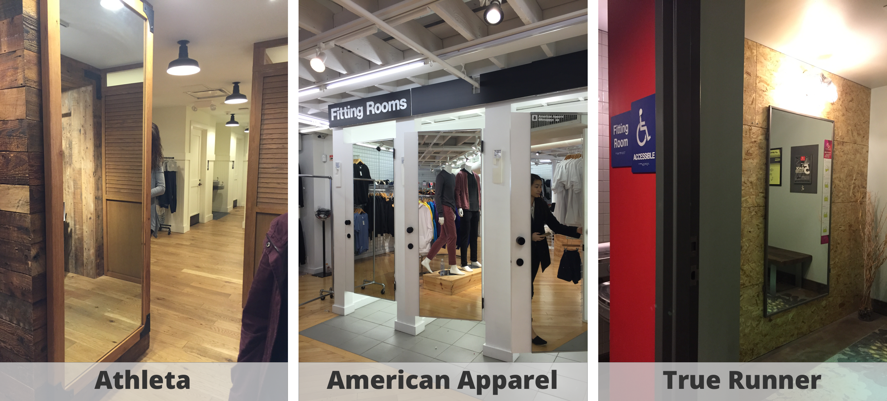
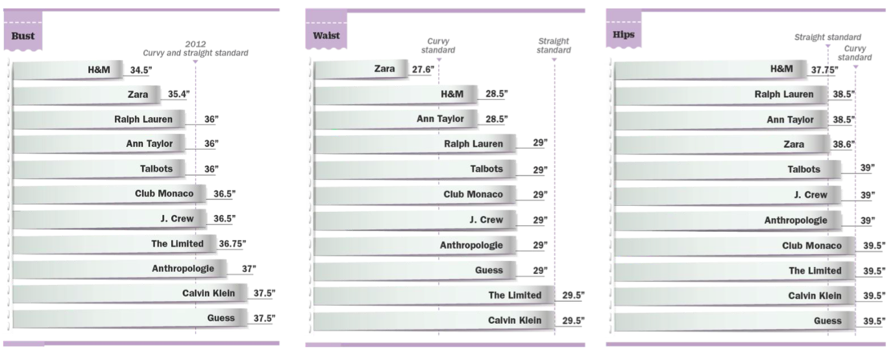
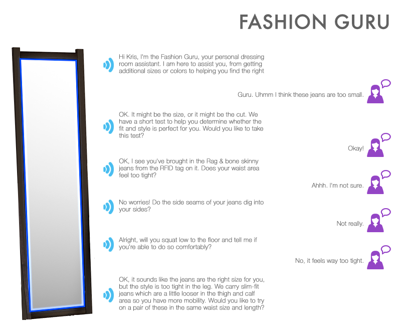

Fitting Room
Building a conversational user interface (CUIs) to enhance the retail experience


PROJECT BACKGROUND
In recent years, conversational user interfaces (CUIs) had become more popular with the most advanced offering something approaching a fluent, spoken conversation between humans and machines. Conversational interaction could benefit users in situations where their hands and/or their visual attention were not available, such as when driving a car or cooking in a kitchen. They also helped in situations where the user’s needs did not map well to the hierarchical information structure of many online systems, which make it tedious to drill down for terse information. The goal of the project was to create a novel conversational user interface (CUI) to improve the retail store dressing room experiences .
When designing a CUI, our team must work to find harmony between the CUI's interactive form and its functional form. The interactive form corresponded with the type of user input and system feedback. The functional form corresponded to a computational abstraction that defines the underlying interaction. For example, a phone routing system could use a verbal prompt (CUI) followed by a numeric selection (person) as the interactive form, which allowed the user to navigate a hierarchical menu of choices, the functional form. In general, we, as designers, needed to find a harmony between allowing users freedom to act and constraining user expressivity in order to increase the systems understanding and ability to provide what users wanted.

RESEARCH APPROACH
Right before we started our design, we gathered more information about the current customer experience with the fitting room. We started out by going to a couple of retail stores to get first-hand experience. We conducted some observations on the customers' interactions with trying on clothes and the service they receive from the employees. In addition, we took on the role of a potential customer by going into the fitting rooms to try on clothes and documented our experiences. Our experiences in all the stores were slightly different and we mapped out different customer journey maps. We also did online research and competitive analysis to understand more about the retail space and the emerging technologies in this industry.

KEY INSIGHTS
- Fitting rooms are important
- They are the key step in converting causal shoppers into buyers and it also helps reduce return rates
- Shoppers need advice when picking on clothes
- Typical shopper will ask for advice from friends who accompany them or from other acquaintances through online interactions
- Fitting rooms are stressful
- 69% of women between age 25-40 said changing rooms are stressful for them
- The design and the space of fitting rooms are not appealing
- Fitting rooms are cramped and there is inadequate lighting
- Shoppers want self-help
- Majority of shoppers agree that having self-help technologies will improve their shopping experience

DESIGN OPPORTUNITIES
Not much of the fitting room experience has changed over the years. Most of the time, you will be led into a small space to try on clothes. After trying it on, you'll look at yourself in the mirror to decide whether or not you like it. But you might want a second opinion. You start taking pictures of yourself with these new clothes on and send them to your friends to get their thoughts. Now, you’re debating on whether or not you want to try a different size. You peek out of the curtain of your fitting room to see if there is an associate available but sadly, no one is around to help you. You decide it is not worth it and just leave the store without purchasing anything.
However, with a CUI, we can enhance and personalize the shopping experience for customers. It can help provide faster service by allowing customers to quickly access information on store inventory. They can ask questions to the CUI instead of waiting for an associate to help them. In addition, it can improve the fitting room experience to make it less stressful and more personalized to increase customer satisfaction and encourage them to finish of their shopping journey with a purchase.
INITIAL SCENARIOS
Our initial idea was focused on changing the environment of the fitting room to make the customer feel more comfortable and show them the different contexts in which their clothes could be worn. After some feedback, we realized that this was way too broad. It also didn't utilize the unique advantages that the CUI could bring to the customer. Therefore, we went back and remapped the customer’s service journey through the lows and highs. We conducted several experience prototyping sessions to run through the scenarios in which potential users could interact with the CUI.
We decided to narrow our scope more from the additional feedback. We realized it would be difficult for the CUI to recommend outfits since everyone’s style can be so different. Instead, we focused on jean fitting. There was a lot to explore in the seemingly simple task of finding the right jeans including size and style.
CHANGE SCOPE TO JEAN FITTING
We noticed that trying on jeans could be a stressful experience.
- Experience of finding the right fit and type of jeans is traumatic for 43% of 1000 women surveyed.
- Customer is unsure whether a pair of jeans fits them well.
- There're an overwhelming amount of options in terms of size and style.
- Everyone’s body shape is UNIQUE
Inconsistent standard for jeans size
Below is a chart that shows that each retailer has a different measurements for their "standard" jeans. This makes it almost impossible to go off the same jean sizes across these retailers.

FINAL DESIGN
We created the Fashion Guru that served as a personal dressing room assistant. It allowed customers to ask questions and get advice on how they could check if the jeans fitted correctly. We incorporated movements into a test to help the user effectively check the fit of their jeans and figure out which part didn't fit them well. With these movements, there was opportunity to use conversation to interact with the system rather than a GUI. We also gave customers the option of asking a sales associate to bring them new sizes or styles, thus keeping them in the fitting room, increasing convenience for them, and boosting sales.
Here is an example of a conversation with the Fashion Guru
Please contact me if you want to see a video of how the Fashion Guru works.